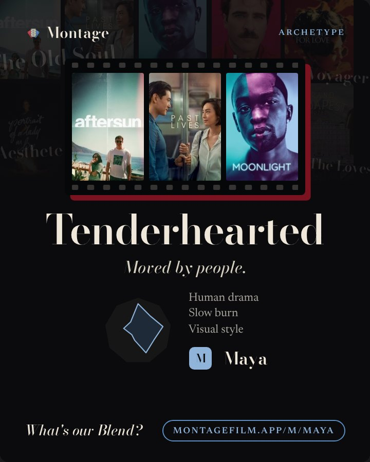
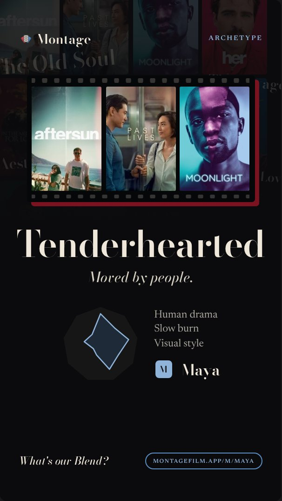
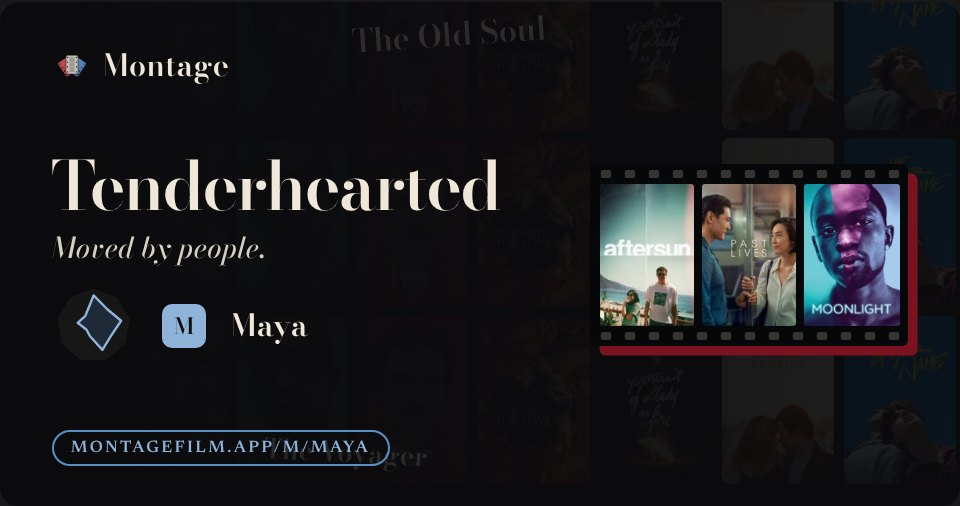

1 · Profile card
Profile card, Post 4:5
/u/<id>/card
- Spine replaces the oxblood offset under the reel.
- Film DNA reads as Film DNA: rings and spokes show it is a chart; the three strongest strands are lit and named at their points.
- The stacked list is gone: its three traits are now the chart's labels, so no tall stack and no extra words.
- Posters as a plain row with gaps, or the subtle reel (right).
spineghost namesDNA chartplain row
v2

v3 · plain row

Montage
Archetype
Tenderhearted
Moved by people.
M
Maya
What's our Blend?
montagefilm.app/m/maya
1b · the browser story
Profile card, Story 9:16
Result.tsx ShareCardGraphic
- The profile card in Story shape: exactly the 4:5 changes.
- Spine; DNA as a chart with its strongest strands named; posters plain or on the subtle reel.
spineghost namesDNA chartplain row
v2

v3 · plain row
Montage
Archetype
Tenderhearted
Moved by people.
M
Maya
What's our Blend?
montagefilm.app/m/maya
2 · Profile link preview
Profile link preview
/u/<id>/opengraph-image · OG
- Spine instead of the offset under the reel.
- The small DNA shape gets its rings and spokes, so even at chat size it reads as a chart, not a loose diamond. Too small to name strands here.
- Posters plain or on the subtle reel.
spineghost namesDNA chartplain row
v2

v3 · plain row
Montage
Tenderhearted
Moved by people.
M
Maya
montagefilm.app/m/maya
3 · Reveal archetype card
Reveal card
/api/reveal-card · Story
- Spine; the DNA shape loses its oxblood offset.
- The DNA is the hero, so it gets the full chart: rings, spokes, its three strongest strands lit and named. The trait line under it was the same three words, so it folds into the chart.
- Ghost names stay: this card is the archetype.
spineghost namesDNA chart
v2

v3
Montage
My archetype
Tenderhearted
Moved by people.
What's yours?
montagefilm.app